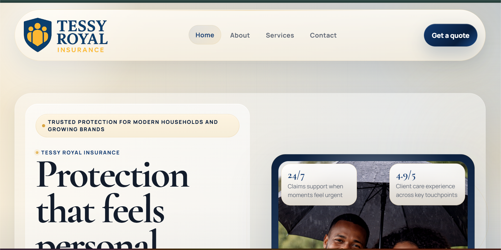
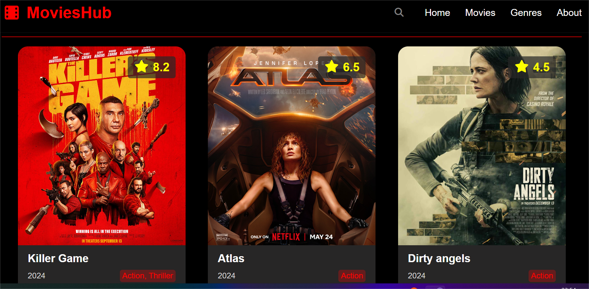
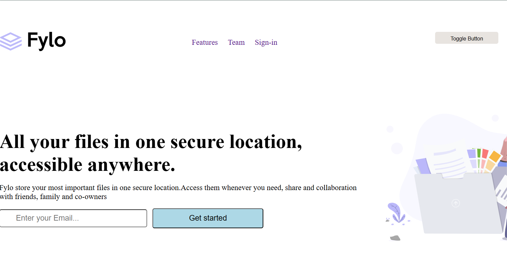
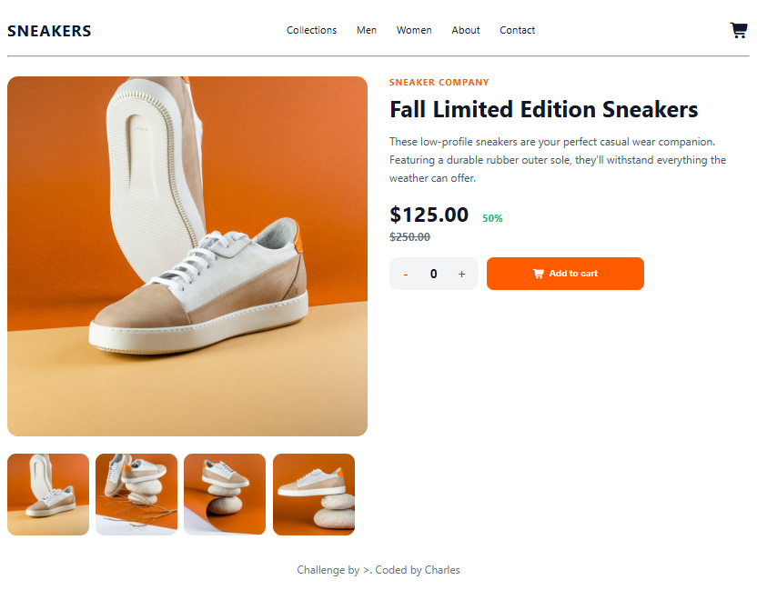
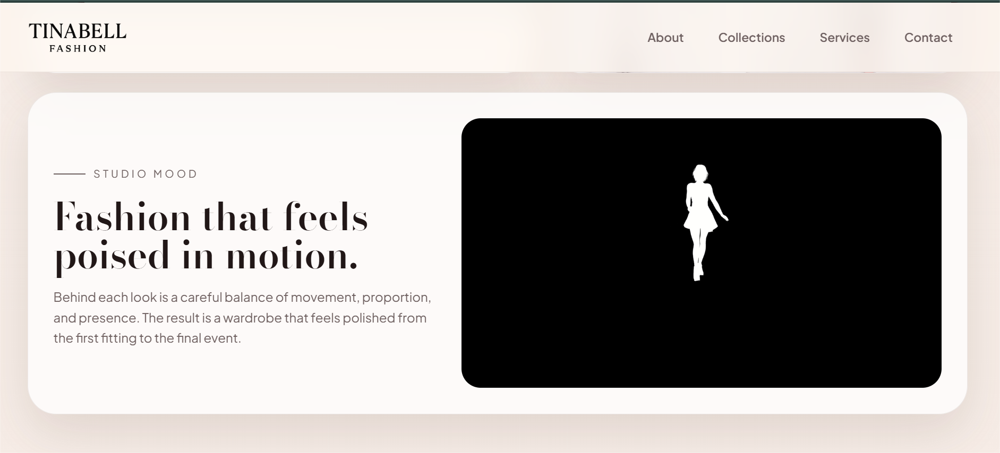

Selected projects
Available for freelance projectsGood ideas.
Thoughtful execution.
These projects show the kind of work I enjoy most: cleaner structure, thoughtful layout rhythm, responsive polish, and visual choices that help each site feel more memorable.
In the spotlight
Frontend + UI
Chosen to show range
Each project reflects a different audience, tone, and browsing style.
See all projects
Featured project
Tessy Royal. A confident first impression.
I wanted one project to lead this page with more presence instead of making every card feel equal. Tessy Royal works well here because it shows warmth, trust, and the kind of cleaner business UI I like building.
Featured build
Business website
A business website I built to feel warm, polished, and easy to explore.
I like leading with Tessy Royal because it quickly shows the kind of clarity, trust-led layout, and calmer browsing flow I try to bring into business-focused websites.
More projects
Different challenges. The same attention to detail.
I like showing a mix here because the goal is not one fixed aesthetic. It is showing how I adapt structure, hierarchy, and tone to the kind of site I am building.
01
Live project
Tessy Royal
A business presentation site I built to feel credible, polished, and easy for visitors to explore without friction.
View Live Project
02
Live project

Movies Hub
I built this movie discovery interface around strong poster presentation, clearer sectioning, and a browsing flow that stays easy to scan.
View Live Project
03
Live project

Fylo Landing Page
A landing page build focused on hierarchy, supporting content blocks, and a lighter flow across screen sizes.
View Live Project
04
Live project

Ecommerce Storefront
A storefront-style build focused on product discovery, visual trust, and a cleaner path from first impression to action.
View Live Project
05
Live project

Tina Bell
A personal brand project shaped around strong visuals, readable content blocks, and a smoother portfolio-style browsing experience.
View Live ProjectHow I work
My process is simple: clarify the message, shape the layout, then polish the experience
The visuals matter, but the real difference usually comes from how the message, structure, and polish are layered together from the start.
My note
Good websites should feel curated, fast, and easy to trust.
When I build, I aim for confidence early: a strong first impression, a clear reading rhythm, and enough visual edge to feel memorable without becoming noisy.
- Stronger hierarchy before extra decoration
- Motion and hover states used to support focus
- Layouts shaped around the audience and the goal
Clarity
I define the message, audience, and overall feel before I start shaping the interface.
Structure
I shape the content flow and page rhythm so the experience feels effortless to move through.
Polish
I add the spacing, motion, and interaction detail that makes the final result feel complete.